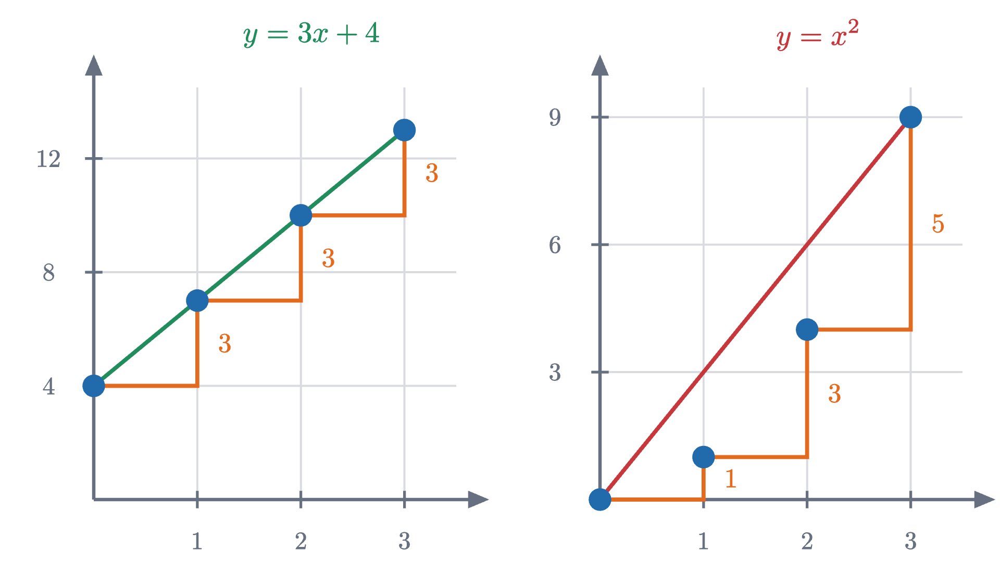
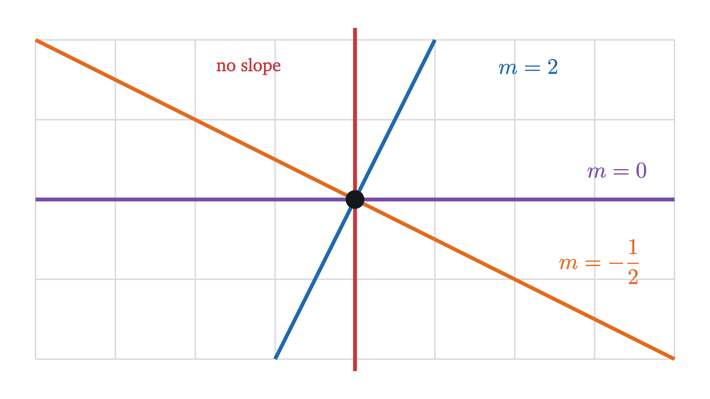
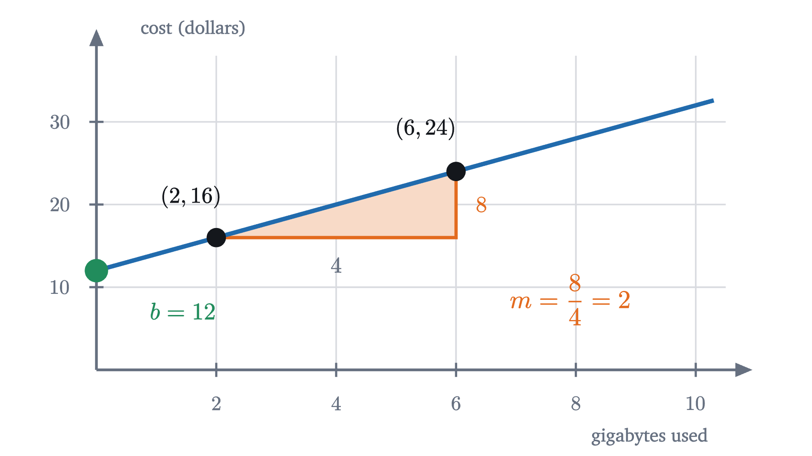
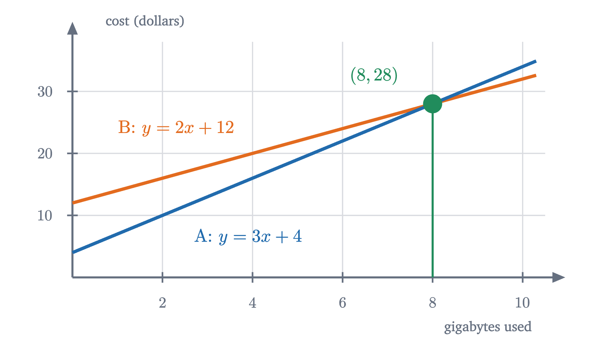

What slope means, and why y = mx + b is a line
A phone bill that grows by the same amount per gigabyte plots as a straight line. Similar triangles explain why, and give slope and y = mx + b their meaning.
A phone plan costs $4 a month plus $3 for every gigabyte of data you use. Work out the bill for 0, 1, 2, 3, 4 and 5 gigabytes, plot the six points, and they appear to sit along the edge of a ruler. There is no obvious reason why they should. The rule “add 3 for each gigabyte” is a statement about arithmetic and says nothing about straightness. A staircase also climbs by the same amount at every step, and a staircase is about as far from straight as a path can be.
Yet the corners of the staircase in the figure do line up, and they keep lining up when the steps are cut in half and in half again. The reason involves a number called the slope, an old fact about triangles, and a proof that the graph of every equation of the form $y = mx + b$ is a straight line.
The same ratio from every pair of points
Write $x$ for the number of gigabytes and $y$ for the bill in dollars. The plan says
Here is the table for whole numbers of gigabytes.
| gigabytes $x$ | 0 | 1 | 2 | 3 | 4 | 5 |
|---|---|---|---|---|---|---|
| cost $y$ (dollars) | 4 | 7 | 10 | 13 | 16 | 19 |
Each step to the right adds 3 to the cost. That much is visible in the rule. What happens between two points that are not neighbors? From 1 gigabyte to 4 gigabytes the cost goes from 7 to 16, so it climbs 9 dollars while the usage moves 3 gigabytes. The vertical change is called the rise and the horizontal change is called the run, and their quotient is
Pause and try
Compute rise divided by run for three more pairs of points on the plan: from $x = 0$ to $x = 5$, from $x = 2$ to $x = 3$, and from $x = 2.5$ to $x = 3$. (At 2.5 gigabytes the bill is $3 \times 2.5 + 4 = 11.5$ dollars.)
Show answerHide answer
From 0 to 5: $\frac{19 - 4}{5 - 0} = \frac{15}{5} = 3$. From 2 to 3: $\frac{13 - 10}{3 - 2} = \frac{3}{1} = 3$. From 2.5 to 3: $\frac{13 - 11.5}{3 - 2.5} = \frac{1.5}{0.5} = 3$. Long stretch or short, whole numbers or not, the quotient is 3.
One line of algebra settles the matter for every pair at once. Take any two different amounts of data, $x_1$ and $x_2$. The bills are $3x_1 + 4$ and $3x_2 + 4$, so
The 4 cancels, the 3 factors out by the distributive law, and the two copies of $x_2 - x_1$ divide to 1 (they are not zero, because the two amounts are different). Nothing in this used the particular numbers 3 and 4. For any equation $y = mx + b$, the same three steps show that rise over run between any two points of the graph is $m$.
A curve fails the same test
Would any formula do the same? Try the simplest one that is not of this kind, $y = x^2$.
Pause and try
For $y = x^2$, compute rise over run between the points with $x = 0$ and $1$, then $1$ and $2$, then $2$ and $3$. Then compute it between $x = 0$ and $x = 3$, and between $x = 1$ and $x = 3$.
Show answerHide answer
The heights are $0, 1, 4, 9$. The first three quotients are $\frac{1}{1} = 1$, $\frac{3}{1} = 3$ and $\frac{5}{1} = 5$. From 0 to 3 it is $\frac{9}{3} = 3$, and from 1 to 3 it is $\frac{8}{2} = 4$. Five pairs of points give four different answers.

On the left every riser is 3 tall and the corners of the staircase fall on the straight segment from the first corner to the last. On the right the risers grow, 1, 3, 5, and the path through the corners bends upward, away from the straight segment.
So constant rise over run and straightness seem to go together. The algebra above proved that $y = 3x + 4$ has a constant ratio. It did not prove that its graph is straight, because “straight” is a word from geometry and we have not yet connected it to the ratio. That connection is the real content of this lesson.
Why every triangle on a straight line has the same ratio
Start from the geometric side. Suppose someone hands you a straight line drawn on a grid, not vertical, with no equation attached. Pick two points on it and draw the run and the rise between them. Then pick two other points anywhere else on the line and do it again. Why should the two quotients agree?
The argument rests on two facts from Euclid’s geometry, and they are exactly where straightness enters. The first: when one straight line crosses two parallel lines, it makes the same angle with each of them (these are called corresponding angles). All horizontal lines are parallel, so our line meets both runs at the same angle. The second: if two angles of one triangle equal two angles of another, the triangles are similar, meaning one is a scaled copy of the other, and the ratio of any two sides of the first equals the ratio of the matching sides of the second. Each of our triangles has a right angle where the run meets the rise, so the ratio of the vertical leg to the horizontal leg is the same in both.
That shared ratio belongs to the line itself, not to any particular pair of points, and so it deserves a name.
The second sentence of the definition makes a promise: that it does not matter which two points are used. A definition is not allowed to promise that without proof.
The two borrowed facts are theorems of Euclid’s Elements (Book I, Proposition 29, and Book VI, Proposition 4), used here without proof. Beyond them the argument used only that two points lie on exactly one straight line.
Why y = mx + b is a straight line
Now come back from the other side. Algebra says the graph of $y = mx + b$ has rise over run equal to $m$ between any two of its points, and geometry says a straight line has one fixed rise over run. That makes it plausible that the graph is a straight line, but no more than plausible: perhaps some bent curve also manages a constant ratio. The following theorem rules that out.
For the phone plan this answers the opening question. The corners of the staircase line up because the equation $y = 3x + 4$ forces rise over run to be 3 between any two of them, and the points with that property, starting from $(0, 4)$, are the points of one straight line. Cutting the steps finer only adds more points of the same line.
What m and b measure
The slope $m$ is a rate. It answers “how much does $y$ change for each unit that $x$ increases?”, and it carries units: the units of $y$ divided by the units of $x$. For the plan, $m = 3$ dollars per gigabyte. Two more gigabytes cost $3 \times 2 = 6$ more dollars whether you were at 1 gigabyte or at 40.
The number $b$ is the value of $y$ when $x = 0$. On the graph it is the height at which the line crosses the vertical axis, which is why it is called the $y$-intercept. For the plan, $b = 4$ dollars, the bill in a month with no data used. The form $y = mx + b$ is called slope-intercept form because the two numbers in it are the slope and the intercept.
Pause and try
Without plotting anything, describe the line $y = -2x + 3$: where does it cross the vertical axis, and what happens to $y$ each time $x$ increases by 1? Give two points on it besides the intercept.
Show answerHide answer
It crosses the vertical axis at height 3. The slope is $-2$, so each step of 1 to the right lowers $y$ by 2. Starting from $(0, 3)$: $(1, 1)$, $(2, -1)$, and going left, $(-1, 5)$.
Changing $m$ turns the line about its intercept, and changing $b$ lifts or lowers it without turning. Two lines with the same $m$ and different $b$ therefore never meet: they are parallel.
Negative, zero and missing slopes
The video passed through three kinds of slope, and a fourth kind was excluded from both theorems.

A positive slope means $y$ increases as $x$ increases, so the line climbs to the right. A negative slope means $y$ decreases as $x$ increases.
A slope of zero means the rise is always 0: the line is horizontal and its equation is $y = b$. A plan with unlimited data for $30 a month is the line $y = 30$.
A vertical line is the case the theorems left out. Take the points $(2, 1)$ and $(2, 5)$. The rise is 4 and the run is $2 - 2 = 0$, so the slope would be $\frac{4}{0}$, and division by zero has no value. We say the slope of a vertical line is undefined. Calling it “infinite” does not help: lines leaning slightly right of vertical have huge positive slopes and lines leaning slightly left have huge negative ones, so no single value fits. A vertical line also cannot be written as $y = mx + b$, because that equation gives one $y$ for each $x$ and a vertical line has every $y$ at a single $x$. Its equation is $x = c$; the line in this example is $x = 2$.
Worked examples
Two points are enough to write down the equation of a line. The steps are always the same: compute $m$ from the two points, then find $b$ by requiring one of the points to satisfy $y = mx + b$.

When two lines cross
Two lines on the same axes answer a comparison. Plan A, the one we started with, is $y = 3x + 4$. Plan B is $y = 2x + 12$.
Pause and try
At what usage do the two plans cost the same, and what is the bill there? Which plan is cheaper at 5 gigabytes, and which at 10?
Show answerHide answer
The costs are equal when $3x + 4 = 2x + 12$. Subtracting $2x$ and then 4 from both sides gives $x = 8$, and the bill is $3 \times 8 + 4 = 28$ dollars (check with plan B: $2 \times 8 + 12 = 28$). At 5 gigabytes plan A costs 19 and plan B costs 22, so A is cheaper. At 10 gigabytes A costs 34 and B costs 32, so B is cheaper.

Finding the point where two lines cross is the subject of the next lesson, solving two equations at once.
Common mistakes
One more caution concerns pictures. The slope is a number with units, and how steep a line looks depends on how the axes are scaled. The graph of plan A above climbs at a gentle angle on the page even though its slope is 3, because one grid square is 1 gigabyte wide and 4 dollars tall.
Stepping back
The hard part was noticing that there was something to prove. Algebra shows that $y = 3x + 4$ grows steadily, and a ruler shows that a drawn object is straight. That these are the same property is a theorem, and its proof needed a fact about shapes: all the right triangles that hang from a straight line are similar. Slope is the ratio those triangles share.
The reusable idea is that a line is a constant rate of change, which is why linear equations describe steady processes such as a fixed price per unit or a fixed speed. It is also the starting point of calculus: a curve such as $y = x^2$ has a different rise over run between different points, and the derivative is what the slope becomes when the two points are brought together.
Check yourself
What is the equation of the line through $(0, 5)$ and $(2, 1)$?
Problems
Problem 1
Find the slope between each pair of points: (a) $(2, 3)$ and $(6, 11)$; (b) $(-1, 4)$ and $(5, 1)$; (c) $(3, 7)$ and $(-2, 7)$.
Show solutionHide solution
(a) $\frac{11 - 3}{6 - 2} = \frac{8}{4} = 2$.
(b) $\frac{1 - 4}{5 - (-1)} = \frac{-3}{6} = -\frac12$. The line falls, as it should: moving right from $x = -1$ to $x = 5$ the height goes from 4 down to 1.
(c) $\frac{7 - 7}{-2 - 3} = \frac{0}{-5} = 0$. Both points have height 7, so the line through them is the horizontal line $y = 7$.
Problem 2
A line has slope 4 and passes through $(1, -2)$. Find its equation in the form $y = mx + b$, and find the points where it crosses the two axes.
Show solutionHide solution
The equation is $y = 4x + b$, and $(1, -2)$ must satisfy it: $-2 = 4 \times 1 + b$, so $b = -6$. The line is $y = 4x - 6$.
It crosses the vertical axis where $x = 0$, at $(0, -6)$. It crosses the horizontal axis where $y = 0$: $0 = 4x - 6$ gives $x = \frac{6}{4} = \frac32$, the point $\left(\frac32, 0\right)$.
Problem 3
A candle is 20 cm tall when lit and burns down 2.5 cm every hour. (a) Write its height $y$ in centimeters after $x$ hours as an equation. (b) State the slope and the intercept with their units and say what each means. (c) When does the candle burn out, and for which values of $x$ does the equation describe the candle?
Show solutionHide solution
(a) The height starts at 20 and drops 2.5 for each hour: $y = -2.5x + 20$.
(b) The slope is $-2.5$ cm per hour, the rate at which the height changes. It is negative because the height decreases. The intercept is 20 cm, the height at time 0.
(c) The candle is gone when $y = 0$: $0 = -2.5x + 20$ gives $x = \frac{20}{2.5} = 8$ hours. The equation describes the candle only for $0 \le x \le 8$. After 8 hours the formula gives negative heights, which mean nothing for a candle. The line continues; the situation it models does not.
Problem 4
A taxi fare is a fixed charge plus a fixed price per kilometer. A 3 km ride costs $9.50 and an 8 km ride costs $19.50. Find the price per kilometer and the fixed charge, and predict the fare for a 12 km ride.
Show solutionHide solution
Let $x$ be the distance in kilometers and $y$ the fare in dollars, so $y = mx + b$. The two rides are the points $(3, 9.5)$ and $(8, 19.5)$.
Slope: $m = \frac{19.5 - 9.5}{8 - 3} = \frac{10}{5} = 2$ dollars per kilometer.
Intercept: $9.5 = 2 \times 3 + b$, so $b = 3.5$ dollars. The fare is $y = 2x + 3.5$. Check with the second ride: $2 \times 8 + 3.5 = 19.5$.
A 12 km ride costs $2 \times 12 + 3.5 = 27.5$, that is, $27.50.
Problem 5
(a) Show that the points $(0, -1)$, $(2, 5)$ and $(5, 14)$ lie on one straight line, and find its equation. (b) Is $(-3, -10)$ on that line?
Show solutionHide solution
(a) The slope from the first point to the second is $\frac{5 - (-1)}{2 - 0} = \frac{6}{2} = 3$. The line through those two points is $y = 3x - 1$ (the first point gives the intercept directly). The third point satisfies this equation, since $3 \times 5 - 1 = 14$, so it is on the same line. Equivalently, the slope from the second point to the third is $\frac{14 - 5}{5 - 2} = \frac{9}{3} = 3$, the same as before.
(b) At $x = -3$ the line has height $3 \times (-3) - 1 = -10$. Yes, the point is on the line.
Problem 6
(a) Let $y = mx + b$. Show that increasing $x$ by any amount $d$ changes $y$ by exactly $md$, no matter what $x$ was to begin with. (b) Conversely, suppose a function $f$ has the property that for some fixed number $m$, $f(x + d) - f(x) = md$ for all real $x$ and $d$. Show that $f(x) = mx + b$ for some number $b$, and say what $b$ is.
Show solutionHide solution
(a) At $x$ the height is $mx + b$, and at $x + d$ it is $m(x + d) + b = mx + md + b$. The difference is $(mx + md + b) - (mx + b) = md$. The starting value $x$ has cancelled, so the change depends only on $d$.
(b) The property holds for all $x$, so use it with $x = 0$: $f(0 + d) - f(0) = md$, that is, $f(d) = md + f(0)$ for every real $d$. Renaming $d$ as $x$, this says $f(x) = mx + f(0)$. So $f$ has the required form with $b = f(0)$, its value at zero.
Problem 7
Let $m \ne 0$. The point $A = (1, m)$ is on the line $y = mx$ and the point $B = \left(1, -\frac1m\right)$ is on the line $y = -\frac{1}{m}x$. Compute the squares of the three side lengths of triangle $OAB$, where $O$ is the origin, and use the converse of the Pythagorean theorem (if the squares of two sides of a triangle add up to the square of the third, the triangle has a right angle between those two sides) to show that the two lines meet at a right angle.
Show solutionHide solution
By the Pythagorean theorem, the square of the distance between two points is the square of the run plus the square of the rise between them. So $|OA|^2 = 1 + m^2$ and $|OB|^2 = 1 + \frac{1}{m^2}$. From $A$ to $B$ the run is 0 and the rise is $-\frac1m - m$, so
The sum $|OA|^2 + |OB|^2 = 2 + m^2 + \frac{1}{m^2}$ is the same expression, so the angle at $O$ is a right angle. The sides $OA$ and $OB$ lie along the two lines, so a line of slope $m$ is perpendicular to a line of slope $-\frac1m$: the slopes of perpendicular lines multiply to $-1$. For $m = 2$ the numbers are $5 + 1.25 = 6.25$.